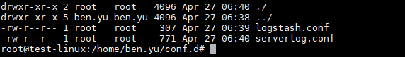
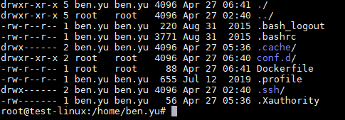
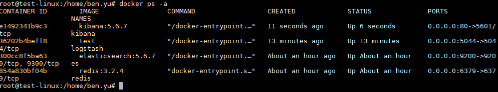

本文章將介紹如何用 docker 建立 ELK
新環境更新
1 | sudo apt-get update |
下載 docker
1 | sudo apt-get install -y docker.io |
下載 redis image 並且 docker run 起來
1 | docker run -d --name redis -p 6379:6379 -v /data/redis:/data --restart=always redis:3.2.4 redis-server --appendonly yes --maxmemory 4gb --requirepass QFkXXBZkLD6MgcEL1y8l |
| 指令 | 意義 | |
|---|---|---|
| -d | 在背景執行 | |
| –name | Container的名稱 | |
| -p | 本機與Container對應的port | |
| -v | 本機與Container對應的資料路徑 | |
| –restart=always | 機器重啟後Container自動重啟（預設是關閉） | |
| redis:3.2.4 | Redis Container的映像檔名稱與版本 | |
| redis-server | 建立redis的server（另有redis-cli的客端版本） | |
| –appendonly yes | 是否做資料持久化 | |
| –maxmemory 4gb | 設定Redis Container 占用記憶體的最大容量 | |
| –requirepass | 客端VM 將Log 資料傳送到Redis 時驗證用的key |
輸入以下指令增加虛擬記憶體大小（至少要大於262144 KB，否則建立好的Elasticsearch執行會失敗）
1 | echo vm.max_map_count=262144 >> /etc/sysctl.conf |
下載 elasticsearch image 並且 docker run 起來
1 | docker run -d --name es -p 9200:9200 --restart=always -v /data/elasticsearch:/usr/share/elasticsearch/data -e ES_JAVA_OPTS:-Xmx6g -e ES_JAVA_OPTS:-Xms6g elasticsearch:5.6.7 |
| 指令 | 意義 |
|---|---|
| -d | 在背景執行 |
| –name | Container 名稱 |
| -p | 本機與 Container 對應的 port |
| -v | 本機與 Container 對應的資料路徑 |
| –restart=always | 機器重啟後Container自動重啟（預設是關閉） |
| -e ES_JAVA_OPTS:-Xms | 指定Elasticsearch 占用記憶體的初始值 |
| -e ES_JAVA_OPTS:-Xmx | 指定Elasticsearch 占用記憶體的最大值 |
| elasticsearch:5.6.7 | Elasticsearch 的映像檔名稱與版本 |
建立資料夾 conf.d 裡面放入 logstash config 跟 logstash filter config
1 | mkdir conf.d |
logstash.conf
1 | input { |
serverlog.conf
1 | filter { |
回到上一層建立 Dockerfile
1 | cd .. |
Dockerfile
1 | FROM logstash:5.6.7 |


buile logstash imsgea ( -t test 是幫容器命名 )
1 | docker build -t test . |
把 logstash docker run 起來
1 | docker run -d --name logstash -p 5044:5044 --link es:elasticsearch --link redis:redis --restart=always -e LS_JAVA_OPTS:-Xms6g -e LS_JAVA_OPTS:-Xmx6g test |
| 指令 | 意義 |
|---|---|
| -d | 在背景執行 |
| –name | Container 名稱 |
| -p | 本機與 Container 對應的 port |
| -v | 本機與 Container 對應的資料路徑 |
| –link | 與其它的 Container 做連結 |
| –restart=always | 機器重啟後 Container自動重啟（預設是關閉） |
| -e ES_JAVA_OPTS:-Xms | 指定 logstash 占用記憶體的初始值 |
| -e ES_JAVA_OPTS:-Xmx | 指定 logstash 占用記憶體的最大值 |
| test | logstash build 起來的映像檔名稱 |
下載 kibana image 並且 docker run 起來
1 | docker run -d --name kibana --restart=always -p 80:5601 --link es:elasticsearch kibana:5.6.7 |
查看容器是否建立成功
1 | docker ps -a |
